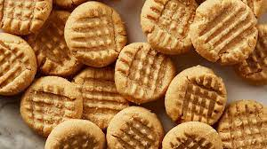

Peanut Butter Cookies

Deliciously Addictive Cookies for PB Lovers
Nobdy will resist these ones!
Ingredients
- Unsalted butter
- Crunchy peanut butter
- Sugar
- Large eggs
- Flour
- Baking powder
- Salt
Steps
- Cream butter, peanut butter, and sugars together in a bowl; beat in eggs.
- In a separate bowl, sift flour, baking powder, baking soda, and salt; stir into butter mixture. Put dough in refrigerator for 1 hour.
- Roll dough into 1 inch balls and put on baking sheets. Flatten each ball with a fork, making a crisscross pattern. Bake in a preheated 375 degrees F oven for about 10 minutes or until cookies begin to brown.
Link to original recipe